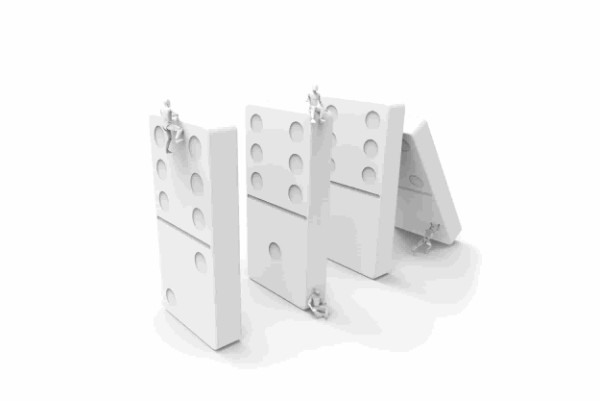
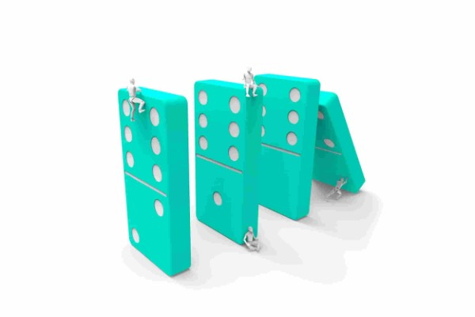
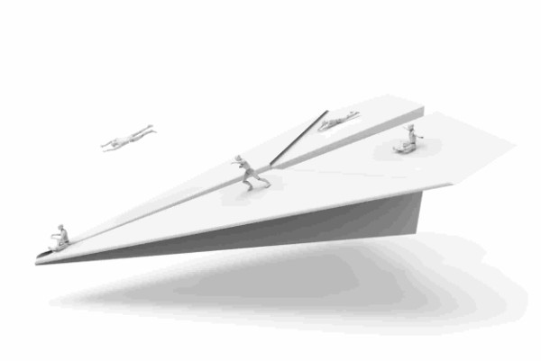
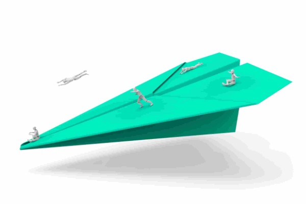
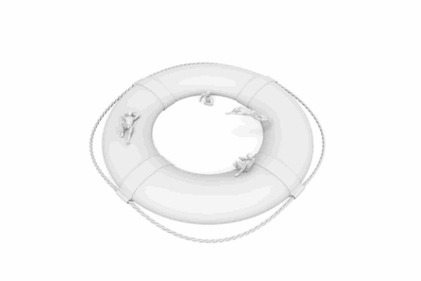
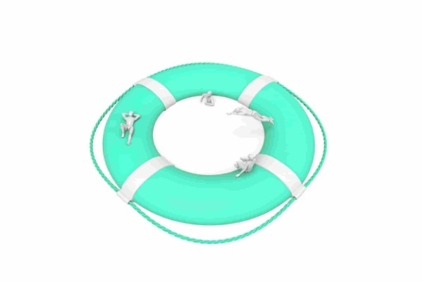
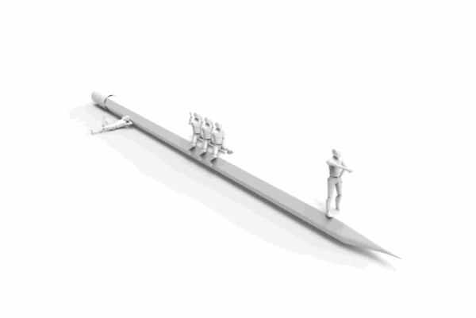
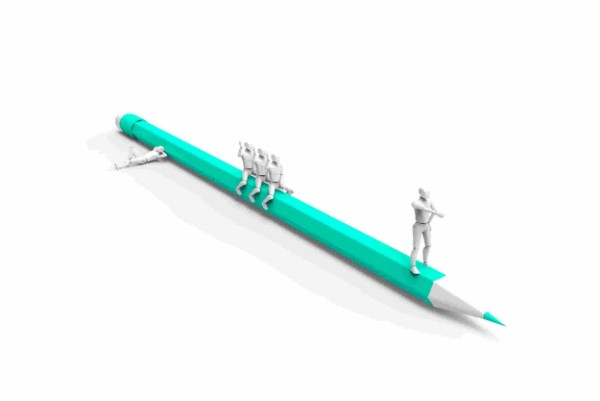
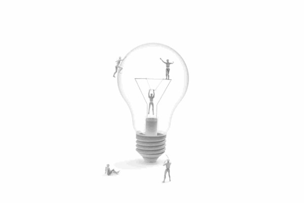
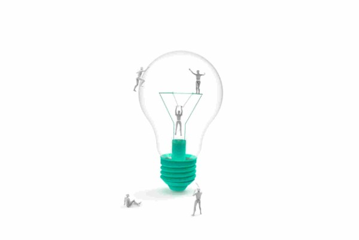

BRANDING
ESTRATÉGICO
vermás

El encanto detrás de una gran marca
Diseñamos marcas que enamoran a los consumidores, con elementos y valores que definen una manera única de percibir el mundo
vermenos

DISEÑO DE
EXPERIENCIA
vermás

Experiencias de uso significativas
Diseñamos productos,servicios y comunicación enfocadas en la experiencia de las personas,resaltamos la cultura de los usuarios
vermenos

CULTURA DE
DISEÑO
vermás

La búsqueda de todo significado
Detrás de un gran negocio está la estrategia de valor que lo distingue y hace único. Desarrollamos los elementos para crear modelos de negocio exitoso.
vermenos

PROTOTIPADO DE
IDEAS
vermás

La materialización de nuevas realidades
Prototipar una idea es demostrar en vez de hablar. Dar vida a una idea y crear el espacio para convertirse en una experiencia memorable de diseño.
vermenos

CONCEPTO
CREATIVO
vermás

La estrategia que define el futuro
Las grandes ideas pueden capturar el interés de sus audiencias, influenciar su respuesta emocional e inspirarlos a tomar acción.
vermenos
